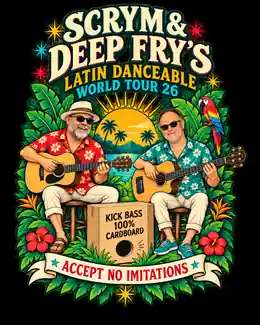
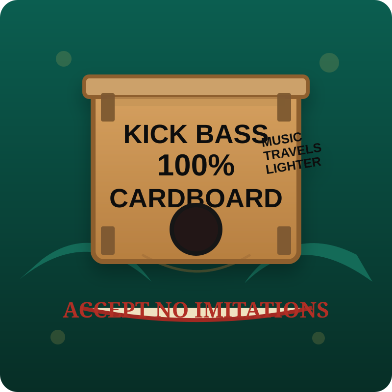
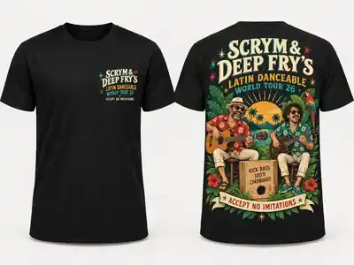
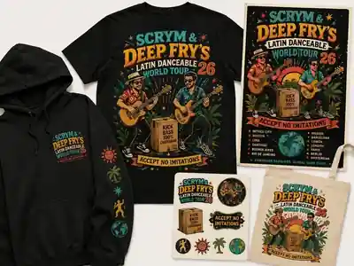
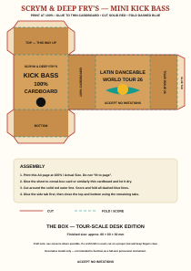

07 MAR
Caversham
UK · Neighbourhood warm-up
🇬🇧
One standard acoustic guitar. One electro-acoustic bass. One kick bass made from 100% cardboard. A frankly ambitious itinerary.

The itinerary begins reassuringly close to home before becoming progressively harder to explain to the neighbours.
Scrym on acoustic guitar, Deep Fry on electro-acoustic bass and the 100% cardboard kick bass. Serious musicians. Questionable logistics.

01 · Scrym
Hat, beard and shades on stage. Responsible for chords, rhythm and maintaining the appearance that somebody has planned this.
02 · Deep Fry
Responsible for the low end, low-frequency diplomacy and any suspiciously detailed spreadsheets associated with the tour.

03 · The Box
No rider. No passport. No endorsement deal. Still the member most likely to survive baggage handling with minimal complaint.
The merch is now real. T-shirts, mugs and other Tour 26 essentials are available from the official Scrym & Deep Fry's shop.


A printable A4 cut-out template for your own desk-sized version of the legendary 100% cardboard kick bass. No roadie required.

Print at 100% / Actual Size, stick the sheet to thin recycled cardboard, cut the solid red outline, score the dashed blue folds and glue the tabs. Finished model is about 60 × 60 × 30 mm.
Desk-scale decorative model only. Use scissors where possible. If using a craft knife, use a proper cutting mat and keep fingers clear.
After Madrid, Mexico City, Bogotá and Buenos Aires, the 2026 tour reaches its natural climax in Earley. Seasonal knitwear optional. Cardboard percussion mandatory.
Back to the top